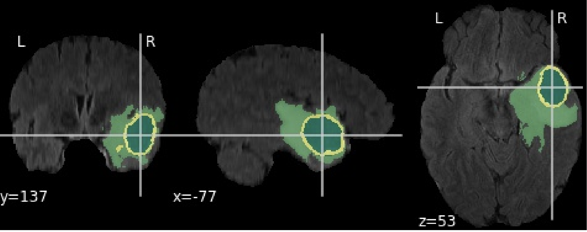
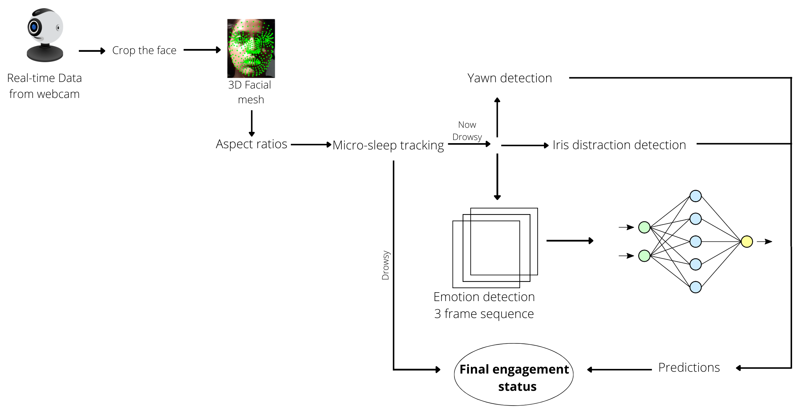
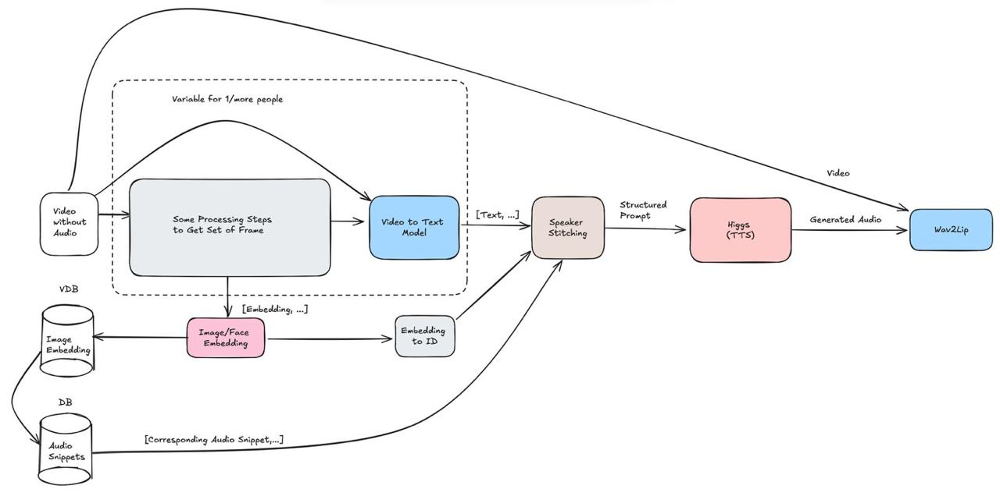
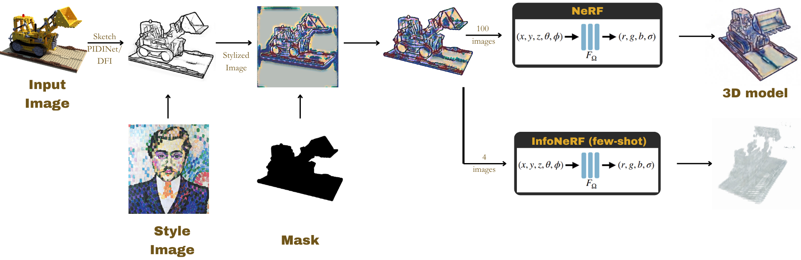
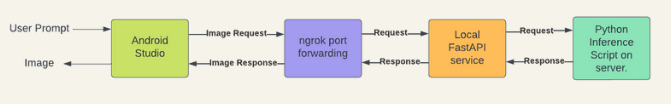

Pooja Ravi
Researcher at the University of Toronto
About me
I work with Professor David Lindell in the Toronto Computational Imaging Group (TCIG) on robot–object interaction and controllable video generation.
I completed my Master of Science in Applied Computing at the University of Toronto in 2025. I hope to pursue a PhD focused on shared action representations and meaningful sensory conditioning signals, with the goal of generating physically plausible action sequences that transfer across robotic embodiments.
Publications
-
ProxyPose: 6-DoF Pose Tracking via Video-to-Video Translation
Ruihang Zhang*, Felix Taubner*, Pooja Ravi, Kiriakos N. Kutulakos, and David B. Lindell
-

Attention Mechanism, Linked Networks, and Pyramid Pooling Enabled 3D Biomedical Image SegmentationPooja Ravi, S. Roy, I. Dutta, and K. Kottursamy
-

Projects
-

Echo CharlieA multimodal pipeline that restores speech to muted video using lip reading, transcript cleanup, and voice synthesis.
-

2D Sketch to 3D StylizationTurns grayscale sketches into stylized 3D views using neural radiance fields, few-shot learning, and CLIP-NeRF.
-

MobileGen: Optimizing Diffusion ModelsOptimizes diffusion models for mobile inference through quantization-aware training, distillation, and pruning.